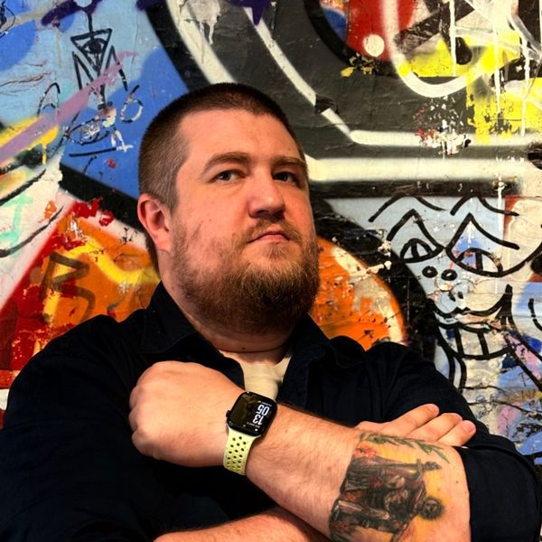

KOSTIANTYN DENYSOV
Technical Lead

Summary
Technical Lead with over 11 years in backend engineering and system architecture, currently leading release
management and developer experience at Deel. Combines hands-on engineering depth with people leadership:
building and coaching teams, owning delivery end to end and aligning stakeholders around clear technical
direction. Track record across Fintech, HR tech and E-Commerce, in startups and enterprises, with a focus on
scalable microservices, cloud platforms and developer productivity that helps organizations ship faster and safer.
Experience
Technical Lead, Deel09/2025 – Present
- Lead and develop a team of release managers and engineers through coaching, regular feedback and career growth, building a high-trust, high-ownership culture.
- Own the end-to-end release process for a large, globally distributed engineering organization, balancing delivery speed with stability and compliance.
- Set the vision and roadmap for internal developer platform and release tooling, replacing manual, error-prone steps with automated, self-service workflows.
- Lead architecture and technical design of new platform services, setting standards for modular, testable and maintainable code.
- Established a blameless incident review practice and turn lessons learned into concrete process and tooling improvements that raise release reliability.
- Partner with engineering leadership, product teams and stakeholders across time zones, communicating clearly with technical and non-technical audiences.
Berlin, Germany
Senior Backend Engineer, Enpal02/2025 – 08/2025
- Delivered scalable, event-driven services using .NET, MongoDB and Azure.
- Built critical features with a focus on maintainability and performance.
Berlin, Germany
Freelance Backend Engineer (Contract)09/2024 – 02/2025
- Led architecture and delivery of internal tools and data pipelines for early-stage startups.
- Delivered all projects as scoped.
Remote
Staff Engineer, Join Solutions02/2024 – 09/2024
- Refactored application processing logic and introduced permission-based access, increasing application volume by 15%.
- Delivered a scalable microservices architecture using gRPC, Docker and Kubernetes, boosting system performance by 25%.
- Mentored engineers, enforced code review policies and drove a 20% improvement in code quality.
- Led cross-functional releases with a 95% on-time delivery rate.
- Optimized database access for critical queries, achieving up to 1000x performance gains.
Berlin, Germany
Senior Backend Software Engineer, Join Solutions12/2022 – 01/2024
- Developed scalable backend services primarily in TypeScript, improving reliability and performance across multiple projects.
- Designed and implemented gRPC APIs between backend systems, improving inter-service communication efficiency by 50%.
- Optimized critical database operations, achieving up to 1000x faster query execution.
Berlin, Germany
Senior Software Engineer, Pixsy09/2021 – 12/2022
- Developed image comparison algorithms, significantly improving image match accuracy.
- Automated data analysis workflows, reducing manual overhead by 50%.
- Established a testing culture, cutting production bugs by 60%.
Berlin, Germany
Backend Technical Lead, Sonect03/2020 – 08/2021
- Delivered a white-label fintech solution for BNL and led the migration to microservices.
- Migrated infrastructure to bare metal for performance and cost gains.
- Integrated with EU financial systems and promoted high code quality standards.
Zurich, Switzerland
Backend Technical Lead, BillBeez05/2019 – 03/2020
- Launched a new fintech platform on scalable Node.js and MySQL microservices.
- Designed secure RESTful APIs and performance-tuned backend processes.
Kyiv, Ukraine
Fullstack Software Engineer, Thomas Cook10/2017 – 05/2019
- Developed web applications with Angular and React in JavaScript and TypeScript.
- Designed and implemented RESTful APIs using Node.js and Express on MySQL and MongoDB.
Kyiv, Ukraine
Software Engineer, Eze.tech (consulting, short contract)08/2017 – 10/2017
- Developed backend systems and RESTful APIs (Node.js, Express) for a ticket reselling e-commerce platform.
Kyiv, Ukraine
Software Engineer, Intersog04/2017 – 08/2017
- Built GDPR-aligned personal data search for the Prefender project, optimizing search algorithms and data storage.
Kyiv, Ukraine
Software Engineer, Leantegra01/2016 – 04/2017
- Migrated the CVO portal from Angular 1.5 to React and built a real-time location service and analytics platform.
- Full-stack development with Node.js, Express, Sequelize, MySQL, PostgreSQL and MongoDB, plus data visualization with NVD3.
Kyiv, Ukraine
Skills
Languages: TypeScript/JavaScript (Node.js), Go, C#/.NET, SQL, Bash
Frameworks: NestJS, Express, Fastify, Next.js, Nx
APIs: REST, gRPC, GraphQL, WebSockets, event-driven architecture
Data: PostgreSQL, MySQL, MongoDB, query optimization, PL/pgSQL
Cloud & infra: AWS, GCP, Azure, Docker, Kubernetes, Terraform, Pulumi
Messaging: Kafka, RabbitMQ
Delivery: release management, CI/CD, migrations, incident postmortems
Quality & security: Jest, Mocha, integration testing, OWASP, JWT, OAuth
Education
B.S. Computer Science, National Technical University of Ukraine "Igor Sikorsky Kyiv Polytechnic Institute"09/2017 – 06/2021
M.Fin. Finance, Kyiv National Economic University09/2004 – 06/2009
Languages
English · Advanced
German · Elementary
Ukrainian · Native
Russian · Native
Projects